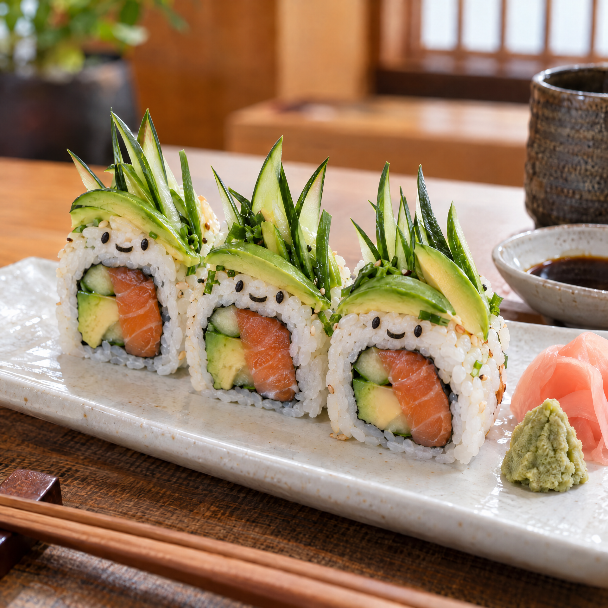
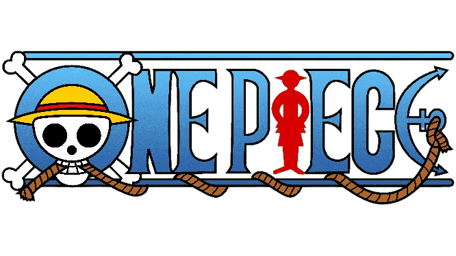
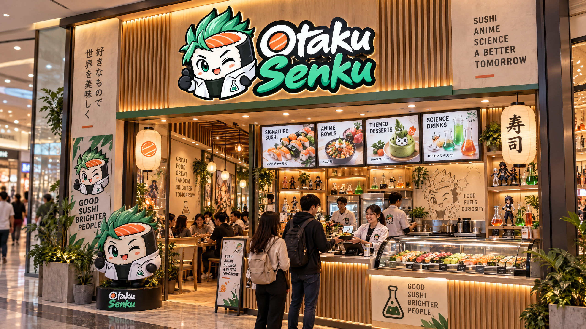
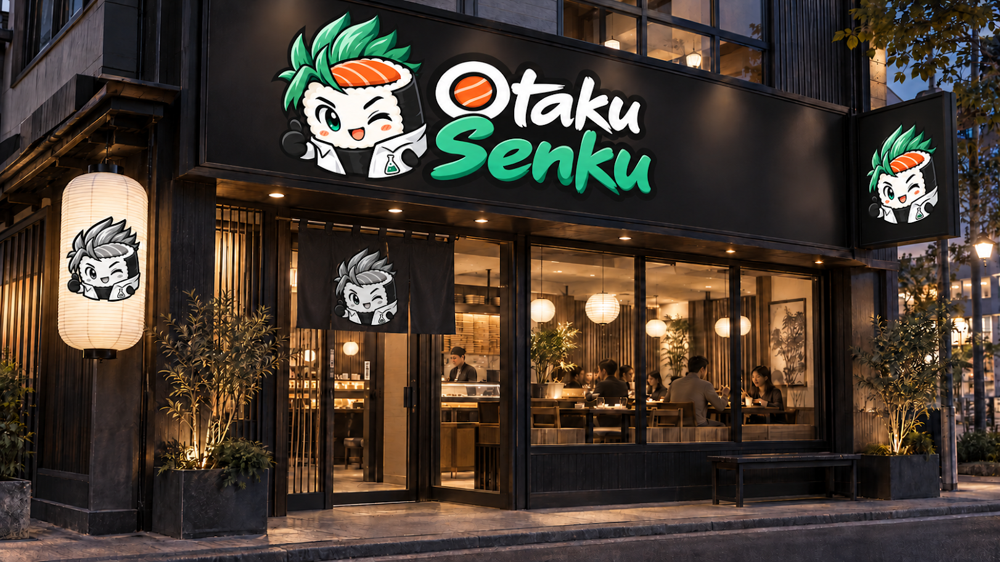

Eu amei a experiência no Otaku Senku! Os sushis são deliciosos e as referências aos animes deixam tudo mais divertido. Já quero experimentar o cardápio inteiro! Esse Respiração da Besta foi o que eu mais gostei.

Sou fã de anime e achei a ideia incrível! Os pratos são criativos, muito bonitos e saborosos. O ambiente temático deixa a experiência ainda melhor. Recomendo demais!Meu prato favorito é Thorn Princess.

“O Otaku Senku conquistou meu coração! A mistura de sushi com referências dos meus animes favoritos é perfeita. Tudo é feito com muita criatividade. Com certeza voltarei! minha bebida favorita foi IRA.



Loja do Shopping Del Rey

Loja Física
 Carrinho
Carrinho